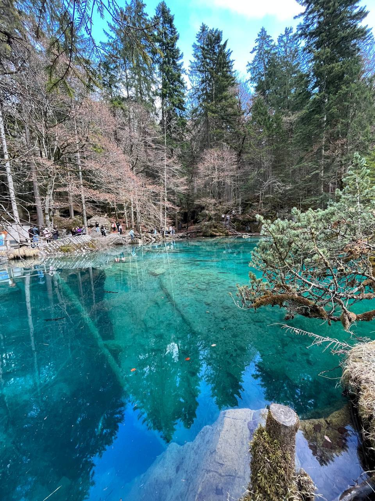
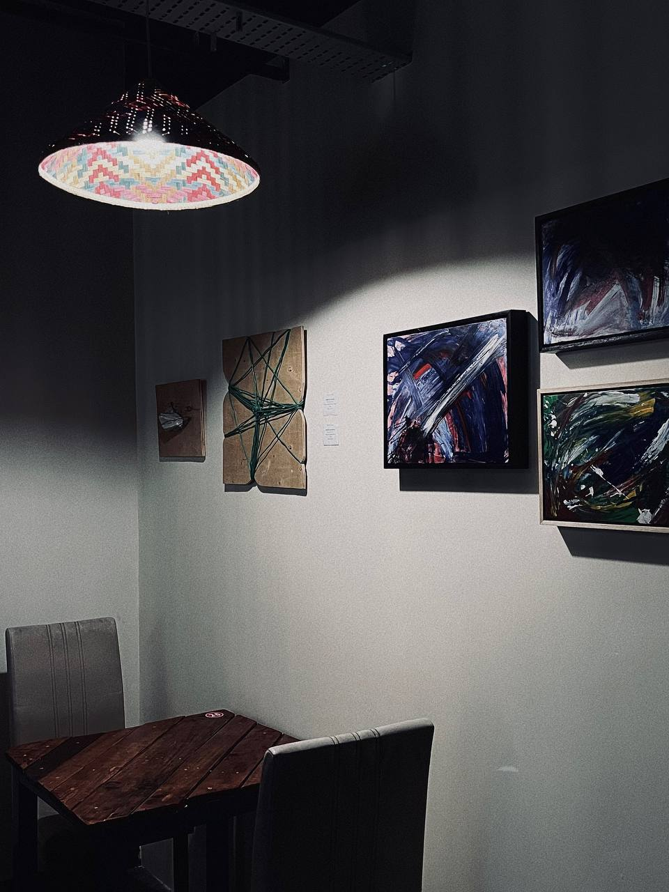
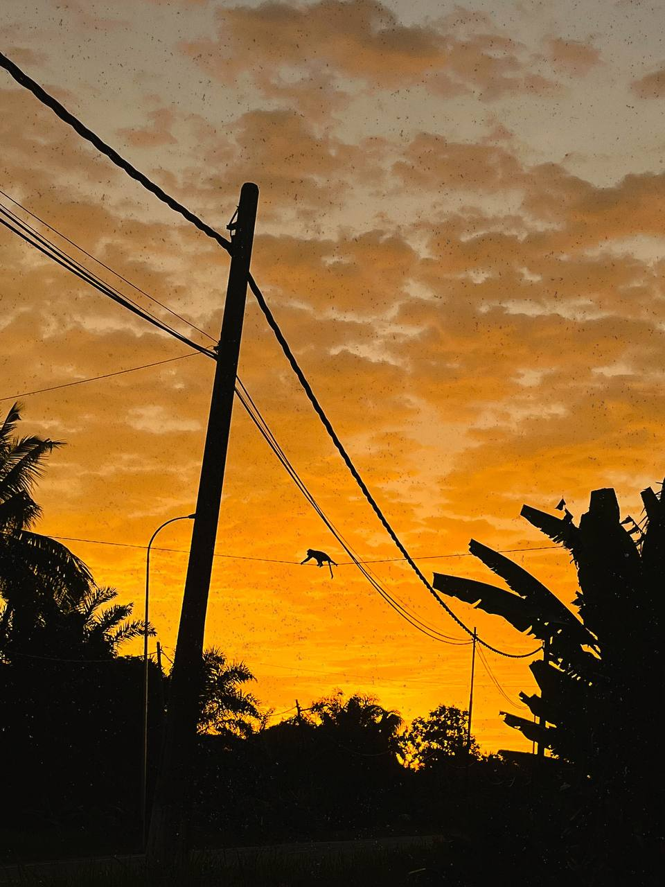

About My Hobby
I am not a professional photographer but I really like to take random photos whenever i go out. I have always been passionate about capturing moments through the lens of my camera. For me, these photos kept the memories alive. You may forgot the memory but you will never when there is a picture that kept it alive.
Some of my snaps



Want to see more ?
If you wish to see more snaps by me, you can reach me through:
Group: snaps by qutrenEmail: qkhairulnizam@gmail.com
Phone: 0122996471